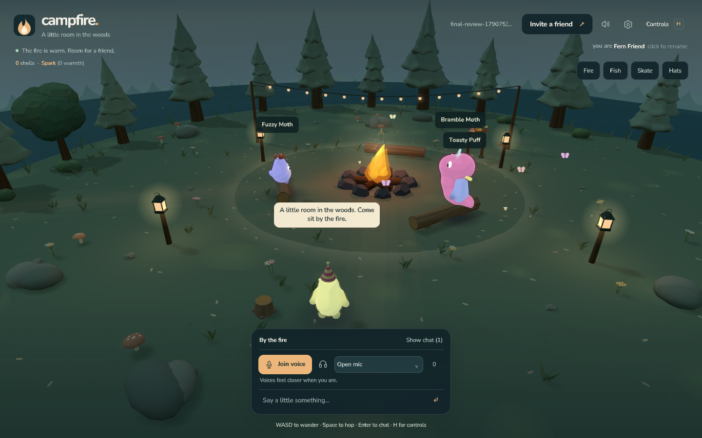
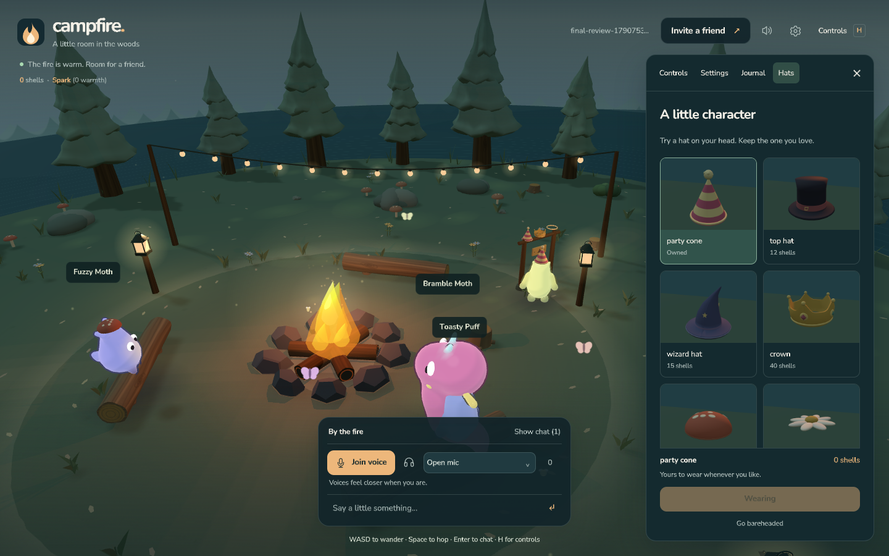
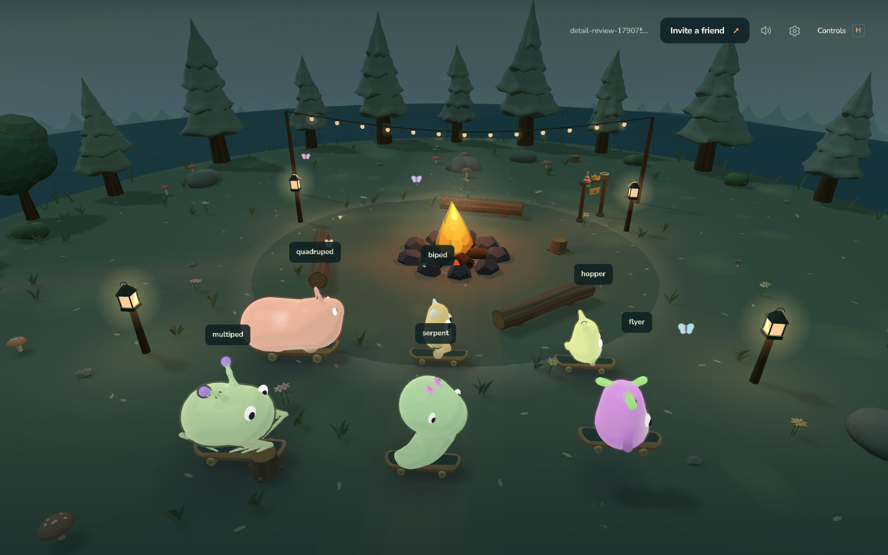
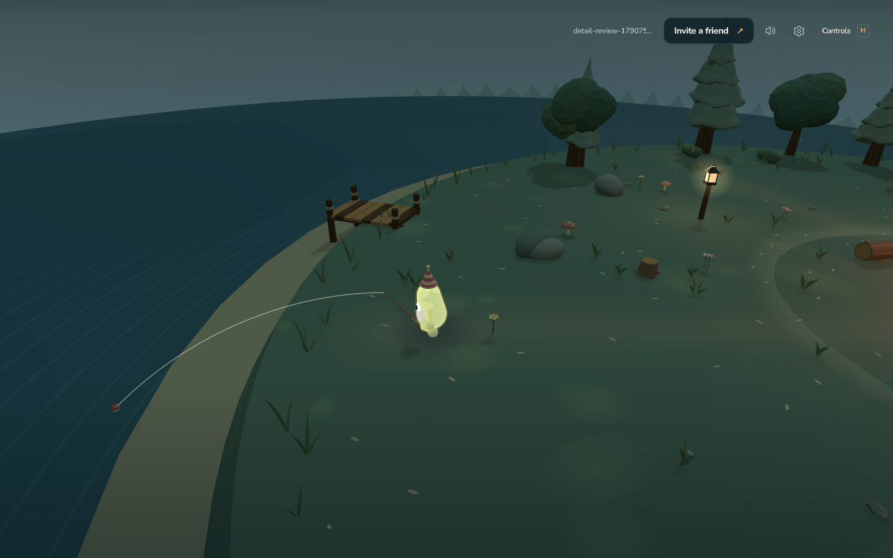
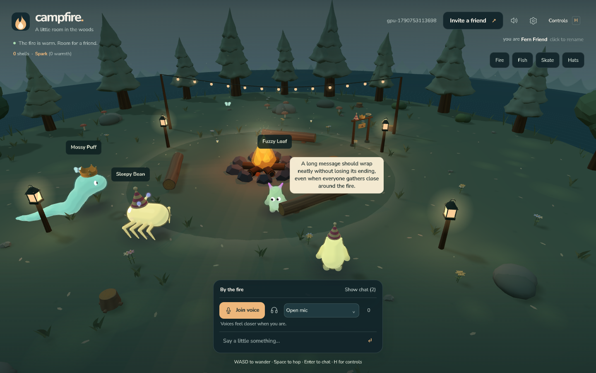
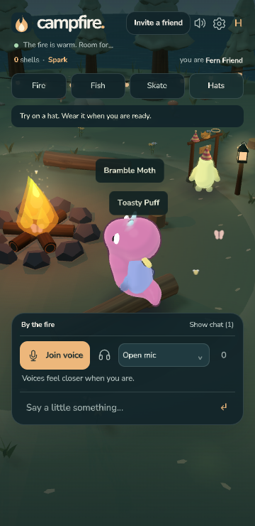

Native WebGPU text.
WGSL glyph and panel pipelines, verified with GPU pixel readback in Chrome and Firefox. Game labels resist selection; text fields keep editing and IME.
The v1.8 playtest fixes
One place for the menus. Actual WebGPU glyphs. Better skating, fishing and little friends. Your playtest notes, turned into changes you can see.

New / From your playtest
Controls, Settings, Journal and Hats share one drawer. Chat lives with voice. Hat previews show the actual models, and the purchase stays within reach.

WGSL glyph and panel pipelines, verified with GPU pixel readback in Chrome and Firefox. Game labels resist selection; text fields keep editing and IME.
The header says Controls, with H as the shortcut. Right-click stays in the game. A single drawer handles every menu section.
All six creature families ride with a dedicated stance. Turns keep the board above ground; walking IK no longer pulls a foot off the skateboard.
The fishing line connects to the actual rod tip and follows a smooth curve above the grass ledge and sand. Eight cast directions passed.
Activities choose reachable approaches. Ninety-six routes crossed the island or reached the fire and hat rack without a blocked path.
Companions perch on the benches, leave their seats and resume walking. Their poses and keeper migration passed a real two-peer check.
Lantern and string-light glows now follow the same world curvature as their fixtures. The displaced halos are gone.
The old review image was stretched by CSS. Its aspect ratio is corrected, and the drawer fits phone, tablet and landscape viewports.


Recorded evidence: reported fixes · Firefox WebGPU · NPC seating and migration.
01 / Look closer
Pick a model, choose an angle, and drag the divider. These are real before and after renders under the same review lighting.
Our visual pick #1 in hats
Bent silhouette, rolled brim and attached stars.
Scores are subjective art judgments: silhouette, construction, detail at play distance and fit with the campsite. Technical checks are listed separately below.
02 / Yes, on the head
They follow the animated head skin through turns, squash and jumps. Ears and propellers make room; the halo keeps its little float.
48 photographed combinations. 768 animated attachment samples passed the separate GPU check. Click a hat to inspect its construction above.
03 / Beyond the art
The polish also reached the text, sound and little interactions that kept getting in the way.

The HUD, chat, editing overlay, names and speech render through native WebGPU WGSL pipelines and a shared SDF atlas. Native controls keep keyboard editing, IME and accessibility. The world renderer remains WebGL.
Still rough: world labels do not sample scene depth, and complex scripts need a shaping engine.
Opt-in voice travels over the existing P2P connections. Distance and direction shape playback, with mute, deafen, per-peer mute and push-to-talk.
Recorded WebRTC check
Remote microphone audio received
Late join, departure, rejoin and actual microphone teardown also passed.
Preview locally, see the price, then choose Buy and wear. Browsing no longer spends your shells.
Benches, trunks, rocks and posts block walking. Activity routes find a way around them. All 53 footprints passed.
Phone conversation collapses until you need it. Clear play space went from 242 to 311 pixels at 360 × 740.

04 / Played, measured, judged
These are recorded results from the local gauntlet, not a live service status. The art scores above are a separate human-style judgment.
58 variants, 222 views, finite walking geometry and eyes.
Six viewports, touch controls, chat, rename and microphone denial.
Pixel readback, 768 hat samples and stable resource counts.
Received waveform, RTP, mute, deafen, PTT and stream lifecycle.
Fishing, rewards, explicit hat purchases and activity navigation.
53 solid footprints, camera extremes and the collapsed chat layout.
96 routes, six skating families, eight casts, menu and browser behavior.
Real glyph pixel readback, physical H key and phone DPR 2.
Two peers agree on the perch, seat release and resumed wandering.
Firefox recorded public-relay connection warnings separately; application and WebGPU errors were zero. The full warnings are retained in its receipt. Couch guest join/leave also passed.
Recorded on 30 September 2026. Loading the captured evidence…